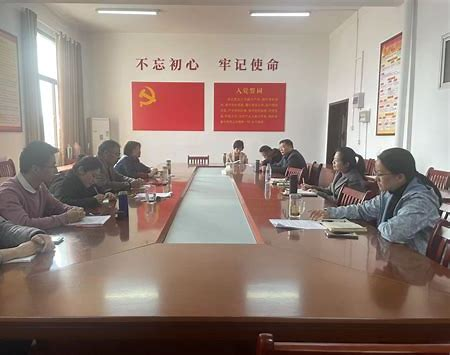
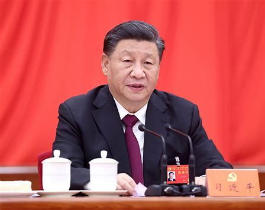

头条要闻

全市深化作风建设优化营商环境大会召开
3月15日，全市深化作风建设优化营商环境大会在市政府召开。会议深入学习贯彻习近平总书记重要论述，全面落实省委省政府决策部署...

习近平：健全全面从严治党体系
习近平总书记强调，要健全全面从严治党体系，坚持和加强党的全面领导，坚持党要管党、全面从严治党...
通知公告
- 2024-03-20 2024年度考试录用公务员公告
- 2024-03-18 阳春河㙟委党校2024年公开招聘公告
- 2024-03-15 关于开展2024年党员干部在线培训的通知
- 2024-03-12 2024年党建工作要点
- 2024-03-10 关于开展党史学习教育的通知